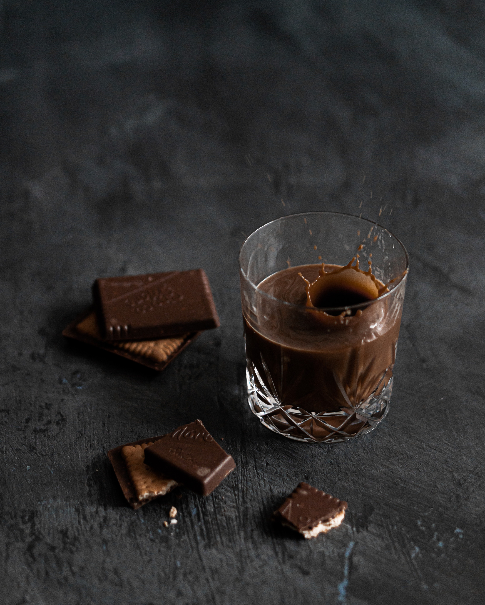

Cocoa is the key ingredient in chocolate and chocolate confections. The cocoa bean is the seed of the cacao tree (Theobroma cacao), a tropical plant indigenous to the equatorial regions of the Americas. From the processed cocoa bean comes the fluid paste, or liquor, from which cocoa powder and chocolate are made.
Chocolate History
The history of chocolate can be traced to the ancient Mayans, and even earlier to the ancient Olmecs of southern Mexico. The word chocolate may conjure up images of sweet candy bars and luscious truffles, but the chocolate of today is little like the chocolate of the past. Throughout much of history, chocolate was a revered but bitter beverage, not a sweet, edible treat.

How chocolate was made.
Chocolate is made from the fruit of cacao trees, which are native to Central and South America. The fruits are called pods and each pod contains around 40 cacao beans. The beans are dried and roasted to create cocoa beans.